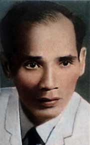

Sinh năm 1912 ở Cao Lao Hạ, huyện Bố Trạch (Quảng Bình). Học trường Quốc học Huế đến năm thứ ba, ra Hà Nội học tư rồi bỏ đi làm báo, làm sách cho đến nay.
Chủ trương Ngân sơn tùng thư, Huế (1933- 1934).
Đã viết giúp: Phụ nữ tân văn, Phụ nữ thời đàm, Tiến hoá, Hanoi báo, Tân thiếu niên, Tao đàn...
Đã xuất bản: Tiếng thu (1939).

.
Lư đang nằm trên giường xem quyển "Tiếng thu" bỗng ngồi dậy cười to:
- A ha! Thế mà mấy bữa ni cứ tưởng...
-?
- Hai câu:
Giật mình ta thấy bồ hôi lạnh,
Mộng đẹp bên chăn đã biến rồi.
mấy bữa ni tôi ngâm luôn mà cứ tưởng là của Thế Lữ...
Thì ra hai câu ấy của Lư!
Ở đời này, ít người lơ đãng hơn. Thi sĩ đời nay họ khôn lắm, có khi ranh nữa, Và yêu thơ, thường ta chả nên biết người: thiệt thòi cho họ và thiệt thòi ngay cho mình. Nhưng yêu thơ Lư mà quen Lư vô hại, thì đời Lư cũng như một bài thơ. Nếu quả như người ta vẫn nói, thi sĩ là một kẻ ngơ ngơ ngác ngác, chân bước chập chững trên đường đời, thì có lẽ Lư thi sĩ hơn ai hết. Giá một ngày kia Lư có nhảy xuống sông ôm bóng trăng mà chết ta cũng không nên ngạc nhiên tí nào.
Trong thơ Lư, nếu có tả chim kêu hoa nở, ta chớ tin, hay ta hãy tin rằng tiếng kia màu kia chỉ có ở trong mộng. Mộng! Đó mới là quê hương của Lư. Thế giới thực của ta với bao nhiêu thanh sắc huy hoàng Lư không nghe thấy gì đâu. Sống ở thế kỷ hai mươi, ngày ngày nện gót giày xuống các con đường Hà Nội, mà người cứ mơ màng thấy mình gò ngựa ở những chốn xa xăm nào.
Cảnh mộng có khi cũng có màu sắc như chiếc cánh diều lững thững trên sườn núi hay con nai vàng ngơ ngác trong rừng thu. Nhưng thường ta chỉ thấy những cảnh rất mơ hồ, không có ở thời nay mà cũng không có ở thời nào. Hãy đọc bài "Thơ sầu rụng": Bóng người con gái quay tơ trong đó ẩn sau một màn mây mờ. Ta biết có nàng nhưng ta không thấy nàng và ta cũng chớ nên tìm nàng làm chi... Cứ để lòng trôi theo cái âm hưởng đặc biệt của bài thơ, ngân nga, dằng dặc, buồn buồn, đều như tiếng guồng xa... Sau bài thơ bát ngát một trời đất ta không hiểu, thi nhân cũng không hiểu.
Nhưng dầu sao con người mơ mông ấy cũng đã rơi xuống giữa cõi trần, người đã sống một cuộc đời rất thực ở trần gian. Có điều mỗi khi kể lại những chuyện thực trong đời mình, người để xen vào rất nhiều chuyện trong mộng. Nhưng chuyện dầu chuyện mộng, tình bao giờ cũng thực. Và mối tình chan chứa trong bài thơ bắt ta phải bồi hồi.
Đặc sắc của Lư chính là ở chỗ này. Từ những kỷ niệm tươi sáng về người mẹ đã khuất, cho đến bao nhiêu buồn thương, bao nhiêu chán nản, bao nhiêu đâu khổ vì tình yêu, cả cái cảnh đời giá lạnh của đôi vợ chồng lúc "tình đà xế bóng", cùng cái thú ngây ngất của cuộc đời " giang hồ". Lư đều kể cho ta nghe một cách rất cảm động.
Một điều rõ ràng: Đọc thơ người khác ta có thể tìm thấy nhiều bài âm điệu tinh tế hơn, nhiều hình ảnh xinh đẹp hơn, nhưng ít bài cảm động như thơ Lư. Ấy, chỉ vì Lư thành thực hơn. Hãy xem: tuy chẳng phải là người của gia đình Lư đã không ngần ngại mà nói đến vợ đến con, một điều các thi nhân ta gần đây hình như kiêng lắm.
Tôi bỗng nhớ câu nói của Pascal: "Tưởng kẻ viết là một nhà văn, không ngờ lại gặp một người ".
Tôi biết có kẻ trách Lư cẩu thả, lười biếng, không biết chọn chữ, không chịu khó gọt dũa câu thơ. Nhưng Lư có làm thơ đâu, Lư chỉ để lòng mình tràn lan trên mặt giấy. Tình đã gửi trong lời thơ, Lư không còn đoái hoài đến nữa. Lư vứt chỗ này một bài, chỗ khác một bài, với cái phóng khoáng cả một kẻ khinh hết thảy những cái gì gọi là quý ở đời này. Sánh với những người yêu thơ Lư, Lư là người thuộc thơ mình ít nhất. Âu cũng là điều bất lợi. Một điều bất lợi nữa là trong khi thơ Việt Nam đương đi tìm nghệ thuật mới lạ, những tình cảm khuất khúc, những hình sắc phiền phức của thiên nhiên, thì Lư cũng chỉ có một ít khúc đàn bình dị, một ít khúc đàn xưa, dầu có đổi xoang đổi điệu cũng vẫn là những khúc đàn xưa.
Nhưng ngoài cái sở thích nhất thời còn những sở thích đời đời không thay đổi.
Bao giờ còn có những cặp vợ chồng nhớ tiếc buổi tân hôn thì những câu như:
Còn đâu ánh trăng vàng
Mơ trên làn tóc rối?...
…..
Đêm ấy xuân vừa sang
Em vừa hai mươi tuổi.
Vẫn khiến họ bâng khuâng.
Bao giờ còn có những kẻ say đắm tình yêu và đau khổ vì yêu thì những câu như:
Ta mơ trong đời hay trong mộng?
Vùng cúc bên ngoài động dưới sương.
hay:
Đợi đến luân hồi sẽ gặp nhau
Cùng em nhắc lại chuyện xưa sau.
Chờ anh dưới gốc sim già nhé!
Em hái đưa anh đóa mộng đầu.
vẫn tìm thấy những tiếng dội trong lòng người.
Dầu chưa lăn lóc trong trường tình, đọc thơ Lư người ta cũn phải bồi hồi vì cảnh phong ba ngoài kia, nơi thi nhân đương trôi nổi. Qua khung cửa bài thơ, ngọn gió lạnh ngoài khơi đưa tới, người ta sẽ thấy xao động cho dầu đã khép chặt cõi lòng để sông một cuộc đời êm ấm.
Sao lại có người có thể đọc những câu như thế mà vẫn dửng dưng. Họ bảo những nỗi đau thưong ấy thường quá. Vâng thường, thường lắm thường như hầu hết những nỗi đau thương thành thực của loài ngườịTôi không muốn nói nhiều. Trước sự đau thương của người bạn, tôi muốn im lìm kính cẩn. Tôi chỉ biết, dầu có ưa thơ người này hay người khác, mỗi lúc buồn đến, tôi lại trở về với Lưu Trọng Lư. Có những bài thơ cứ vương vấn trong trí tôi hằng tháng, lúc nào cũng như văng vẳng bên tai. Bởi vì Lư nhiều bài thực không phải là thơ, nghĩa là những công trình nghệ thuật, mà chính là tiếng lòng thổn thức của lòng ta.
Mars 1941
NẮNG MỚI
Tặng hương hồn thầy me
Mỗi lần nắng mới hắt bên song,
Xao xác gà trưa gáy não nùng,
Lòng rượi buồn theo thời dĩ vãng,
Chập chờn sống lại những ngày không.
Tôi nhớ me tôi, thuở thiếu thời
Lúc người còn sống tôi lên mười;
Mỗi lần nắng mới reo ngoài nội,
Áo đỏ người đưa trước dậu phơi.
Hình dáng me tôi chửa xóa mờ
Hãy còn mường tượng lúc vào ra:
Nét cười đen nhánh sau tay áo
Trong ánh trưa hè trước dậu thưa.
(Tiếng thu)
THƠ SẦU RỤNG
Vừng trăng từ độ lên ngôi.
Năm năm bền cũ em ngồi quay tơ.
Để tóc vướng vần thơ sầu rụng,
Mái tóc buồn thơ cũng buồn theo.
Năm năm tiếng luạ xe đều...
Những ngày lạnh rớt, gió vèo trong cây.
Nhẹ bàn tay, nhẹ bàn tay,
mùi hương hàng xóm bay đầy mái đông.
Nghiêng nghiêng mái tóc hương nồng,
thời gian lặng rót một dòng buồn tênh.
(Tiếng thu)
GIANG HỒ
Mời anh cạn hết chén này
Trăng vàng ở cuối non tây ngậm buồn
Tiếng gà đã rộn trong thôn
Nửa đời phiêu lãng chỉ còn đêm nay
Để lòng với rượu cùng say
Chừ đây lời nói chua cay lạ thường
Chừ đây đêm hãy đầy sương
Con thuyền còn buộc,trăng buông lạnh lùng
Chừ đây trăng nước não nùng
Chừ đây hoa cỏ bên sông rũ buồn
Tiếng gà lại rộn trong thôn
Khoan đừng tơ tưởng vợ con chuyện nhà
Giờ này còn của đôi ta
Giang hồ rượu ấy còn pha lệ người
Ồ sao rượu chẳng kề môi
Lời đâu kiều diễm cho nguôi lòng chàng
*
Tay em nâng chén hoàng hoa
Sá gì hớp rượu vì ta bận lòng
Hãy gượm lắng nghe dòng sông chảy
Gió đùa trăng trên bãi lạnh lùng
Sá gì hớp rượu, bận lòng
Đợi gì môi nhấp rượu nồng mới say
Hãy nhích lại đưa tay ta nắm
Hãy buông ra đằm thắm nhìn nhau
Rồi trong những phút giây lâu
Mắt sầu gợn sóng, lòng đau gợn tình
Phút giây ấy, ta mình ngây ngất
Bỗng con thuyền buộc chặt, rời cây
Cho ta khất chén rượu này
Vì ta em hãy lựa dây đoạn trường
Khoan để đốt chút hương trầm đã
Đợi trầm bay rộn rã lời ca
Nghe xong ta ngắm trời xa
Dòng sông ngân đã nhạt mờ từ lâu
Tiếng gà đã gáy mau trong xóm
Bình minh đà rạng khóm tre cồn
Trông nàng môi nhạt màu son
Giật mình ta nhớ vợ con ở nhà
Từ đấy chẳng bao giờ phiêu lãng
Niềm thê nhi ngày tháng quen dần
Đôi phen nhớ cảnh phong trần
Bóng nàng ẩn hiện xa gần đâu đây
Tưởng nghe tiếng gọi nơi hồ hải
Mắt lệ mờ ta mải trông theo
Trong buồng bỗng tiếng con reo
Vội vàng khép cửa gió heo lạnh lùng
*
Đêm ấy rượu nàng ta không uống
Từ sau thề không uống rượu ai
Đôi phen ngồi ngóng trân trời
Chẳng bao giờ nghĩ đến đời phiêu lưu
Ngoan ngoãn như con cừu non dại
Cỏ quanh vườn cắn mãi còn ngon
Sau lưng nghe tiếng cười dòn
Vội vàng nghoảnh lại...thằng con vẫn cười
Nó đưa ta một chai rượu bé
Bảo rằng: "đây rượu mẹ dâng cha"
Giật mình ta mới nhớ ra
Là ngày sinh nhật vợ ta đó mà
Ta uống chẳng hóa ra lỗi hẹn
Mà từ nan đâu vẹn đạo chồng
Than ôi, trời giá đêm đông
Máu du tử thực trong lòng hết sôi
Chén lại chén kề môi thủ thỉ
Càng vơi càng túy lúy càng đầy!
Lúc tỉnh rượu lặng ngồi bên án
Trông vào gương, lằn chán có vôi
Vợ con khúc khích đứng cười
Còn ta vô ý lệ rơi xuống bàn
Hết say vẫn bàng hoàng trong mộng
Xót xa thay cái giống giang hồ
Ngón đàn thêm một đường tơ
Mà người sương gió nghìn thu nhọc nhằn
*
Thôi rồi ra chốn nước non
Lồng son lại để sổ con chim trời
Thú hồ bể cuốn mời du tử
Niềm thê nhi khôn giữ được người
Biết sao trái được tính trời
Giang hồ cốt ấy trọn đời phiêu linh...
(Tiếng thu)